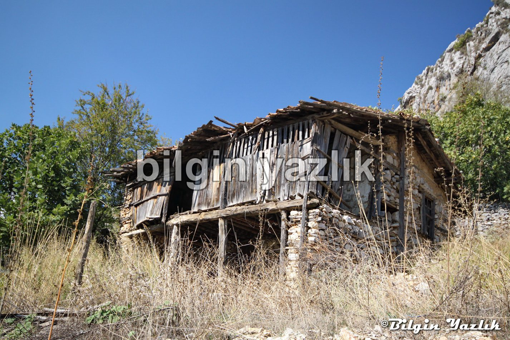
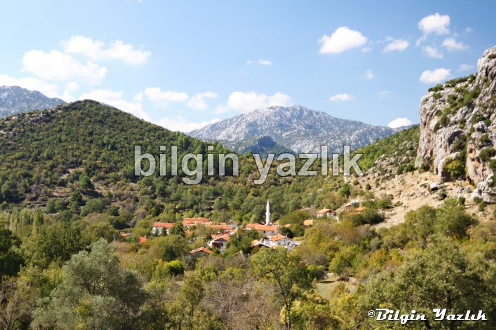
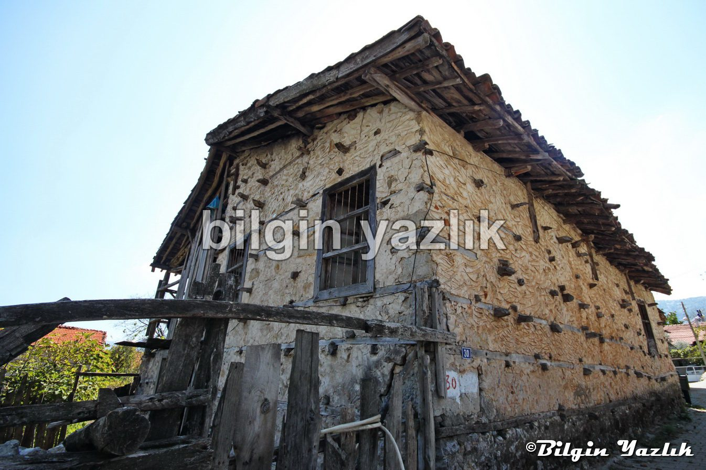
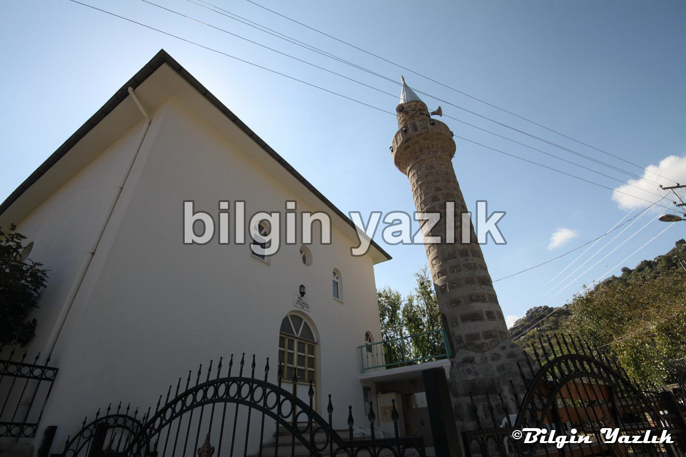
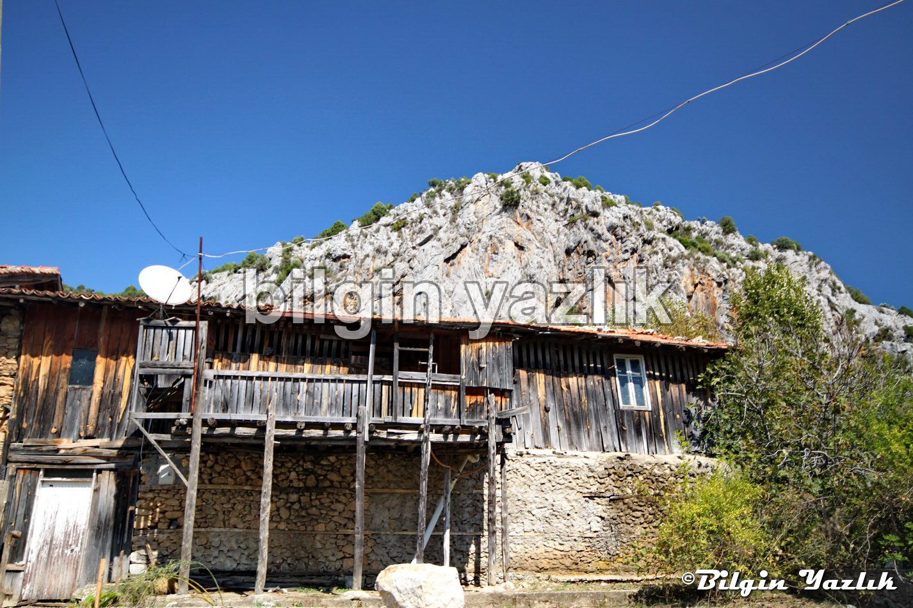
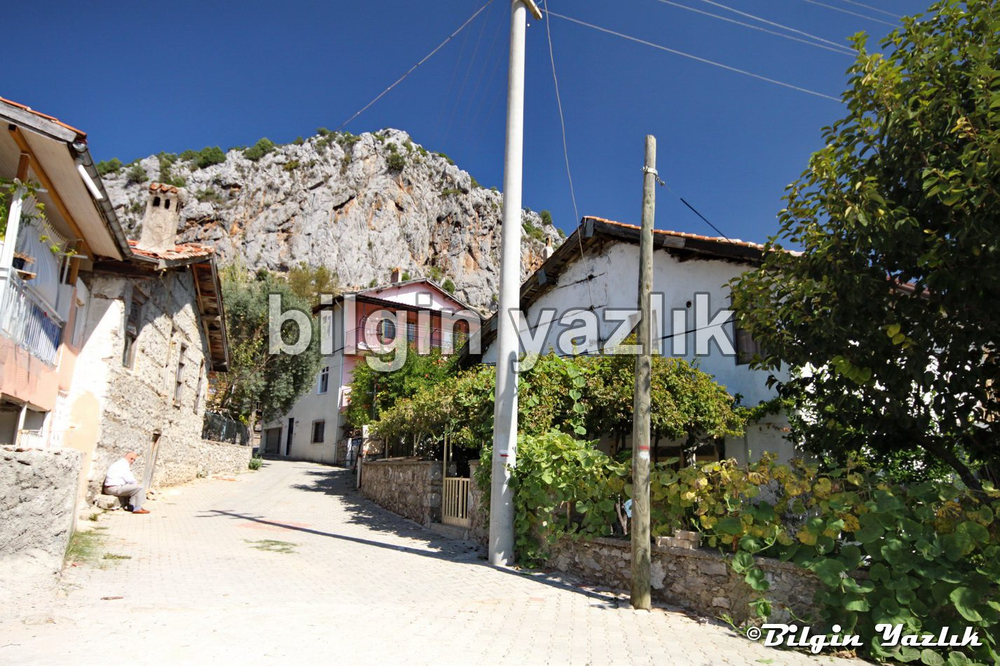

Menteşbey – Gödene – Kotanna
Antalya’nın Akseki ilçesine bağlı modern ve büyük bir köy yerleşimidir Menteş Bey.
Eski adı Gödene diye biliniyor, daha eski adı ise Kottana (Kotannâ) olarak biliniyor.
Eski bir kavim olan Luviler bu bölgede uzunca bir zaman yaşamışlar, yüksek tepelerde Luvi kale kalıntıları bugün hala görülebilmektedir.
Köyün bir diğer önemli özelliği Osmanlı’ya en çok kadı veren yer olmasıdır, öyle ki köyde neredeyse herkes kadılık yaparmış.
Kadı olarak vazife gören Menteşbeyliler hali vakti yerinde kimselermiş bu nedenle Arap hizmetçiler getirip çalıştırırlarmış, bugün Arap hizmetçiler ile evlenmiş çok sayıda köylü vardır.
Köy akdenize açılan bir vadinin içerisinde yer alıyor, dolayısı ile iklimi muhteşem ve neredeyse herşey yetişiyor. Birkaç örnek verecek olursak: Zeytin (zamanında Luviler burada zeytincilik ile uğraşmışlar, köyde antik zeytin işleme tesisleri bulunuyor), Bağdat (Japon) Hurması, Hünnap, Nar, Ceviz, İncir, Mandalina, Portakal,…
Köy geçmişteki zenginliğini bugüne de aktarmış, köy içi yolların tamamı parke taşlar ile imal edilmiş.
Seydişehir’den Akseki’ye giderken İbradı yoluna sapıyorsunuz, birkaç kilometre sonra Menteşbey tabelasına sapıyorsunuz.






Bu yazı taliyol arşivinden taşınmıştır. · özgün kayıt